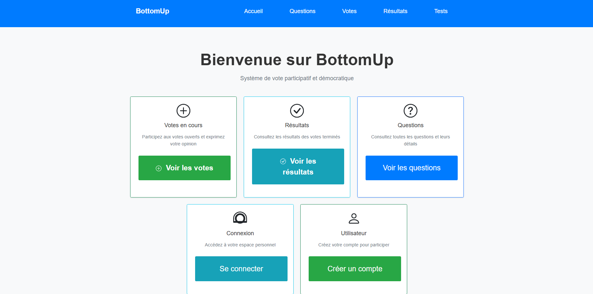

Ma participation
Principales missions :
- Conception d’algorithme de vote
- Développement de différentes vues pour un affichage correct
- Tests, débogage et amélioration des différentes fonctionnalités
- Optimisation, gestion et modification de la base de données
Bilan
Ce projet m’a permis d'apprendre le PHP et de développer une application web entière en touchant à différents aspects (base de données, algorithmes, web, authentification). J’ai pu découvrir la méthode agile SCRUM ainsi que différents outils pour améliorer l’organisation de l’équipe ainsi que notre efficacité.
Compétences développées
Compétences techniques
PHP
MySQL
Git
Architecture MVC
Principe SOLID
Tests & débogage
Structuration projet
Compétences transversales
Travail en équipe
Gestion du temps
Communication technique
Autonomie
Résultats

Cliquez sur les points pour naviguer ou sur le bouton pour agrandir l'image.